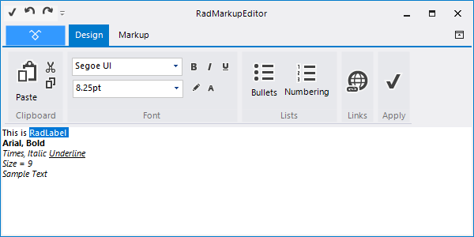
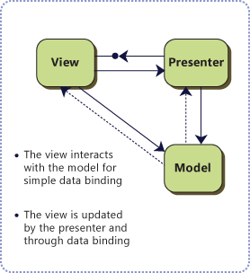
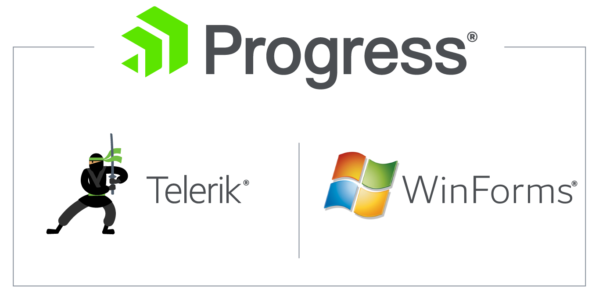

Welcome
Progress Virtual Classroom

| Date | Time | Course |
| February 28, 2018 | 9am - 1pm EST | Kendo UI & Angular |
| March 7, 2018 | 9am - 1pm EST | Telerik UI for ASP.NET MVC and ASP.NET Core |
| March 8, 2018 | 9am - 1pm EST | Kendo UI & React |
| March 14, 2018 | 9am - 1pm EST | Kendo UI & jQuery |
| March 22, 2018 | 9am - 1pm EST | Kendo UI & Vue |
| March 27, 2018 | 9am - 1pm EST | Telerik UI for Xamarin |
| March 30, 2018 | 9am - 1pm EST | Telerik UI for WPF |
| April 5, 2018 | 9am - 1pm EST | Telerik Reporting & Telerik Report Server |
| April 10, 2018 | 9am - 1pm EST | Telerik UI for WinForms |
| April 12, 2018 | 9am - 1pm EST | Telerik UI for ASP.NET AJAX |
| April 13, 2018 | 9am - 1pm EST | Telerik UI for UWP |
Yavor Ivanov
 |
yavor@newventuresoftware.com |
 |
www.newventuresoftware.com/blog |
 |
github.com/yavor87 |
Agenda
- TPF
- Themes
- Explore & customize components
- Convert existing apps to RadControls
- MVP
Why choose Telerik
- 120+ UI Components
- Build with performance in mind
- TPF
- Modern Professional Themes
- High DPI Support
- Multi-Touch support
Installing Telerik components for WinForms
- Setup TelerikUIForWinFormsSetup
- MSI installer
- ZIP archive for manual installation
- Nuget: https://nuget.telerik.com/nuget
Telerik Presentation Foundation
Specific Internal Structure

Benefits of using TPF
- Deep customization
- Theming
- Animations
- Creating custom controls easily
Important classes in the TPF
- RadObject
- RadElement
- VisualElement
- BasePrimitive
- LayoutPanel
- RadItem
- RadControl

Primitives
TextPrimitive: a string of text.BorderPrimitive: the border around a control or area.FillPrimitive: the fill within a rectangular area.LinePrimitive: a line.RectanglePrimitive: a rectangle.CheckPrimitive: a check mark.RadioPrimitive: a single radio button.ImagePrimitive: an image.ArrowPrimitive: an arrow on screen, such as the arrow in a RadDropDownButton control.OverflowPrimitive: an overflow arrow.GripPrimitive: Displays a vertical row of dots as an visual cue that the area can be gripped and dragged.ProgressBarPrimitive: the interior of a progress bar.TrackBarPrimitive: the basic UI of a trackbar, without the trackbar thumb.
Layout
- Outer layout system: Winforms
- Inner layout system: TPF
Predefined Layout Panels
- StackLayoutPanel
- WrapLayoutPanel
- GridLayout
- ImageAndTextLayoutPanel
- BoxLayout
- DockLayout
Dependency Properties
- Data binding
- Default value
- Value validation
- Animation
- Change Monitoring
RadProperty
public static RadProperty IsDefaultButtonProperty;
public MyButtonElement() {
IsDefaultButtonProperty = RadProperty.Register("IsDefaultButton",
typeof(bool), typeof(MyButtonElement),
new RadElementPropertyMetadata(false, ElementPropertyOptions.None,
new PropertyChangedCallback(OnIsDefaultButtonPropertyChanged)));
}
public bool IsDefaultButton {
get => return (bool)this.GetValue(IsDefaultButtonProperty);
set => this.SetValue(IsDefaultButtonProperty, value);
}
private static void OnIsDefaultButtonPropertyChanged(RadObject obj, RadPropertyChangedEventArgs e) {
Console.WriteLine("OnIsDefaultButtonChanged");
}HTML-like Text Formatting
HTML-like Text Formatting
this.radLabel1.Text = "<html><size=12>This is RadLabel" +
"<br><b><font=Arial>Arial, Bold</b>" +
"<br><i><color= Red><font=Times New Roman>Times, Italic <u>Underline</u>" +
"<br><size=9>Size = 9<br><color= 0, 0, 255>Sample Text";High DPI support


Touch Support
- RadGridView
- RadTreeView
- RadListView
- RadPropertyGrid
- RadListControl
- RadCarousel
- RadCommandBar
Touch events
- All
- Pan
- Rotate
- Zoom
- TwoFingerTap
- PressAndTap
Touch Support
protected override void CreateChildItems(RadElement parent) {
...
button.RotateGesture += new RotateGestureEventHandler(OnRotateGesture);
button.ZoomGesture += new ZoomGestureEventHandler(OnZoomGesture);
}
void OnRotateGesture(object sender, RotateGestureEventArgs e) {
button.AngleTransform -= (float)(e.Angle * 180D / Math.PI);
}
void OnZoomGesture(object sender, ZoomGestureEventArgs e) {
button.ScaleTransform = new SizeF(
(float)(button.ScaleTransform.Width * e.ZoomFactor),
(float)(button.ScaleTransform.Height * e.ZoomFactor));
}Transformations
- Rotate (AngleTransform)
- Scale (ScaleTransform)
- Translate (PositionOffset)
Highlight and BorderHighlight mouse effects

Animations

private void btnAnimateMargin_Click(object sender, EventArgs e) {
AnimatedPropertySetting setting2 = new AnimatedPropertySetting();
setting2.Property = RadElement.MarginProperty;
setting2.StartValue = new Padding(0);
setting2.EndValue = new Padding(10);
setting2.NumFrames = 14;
setting2.Interval = 30; // milliseconds
setting2.ApplyValue(btnAnimateMargin.ButtonElement);
}Live Coding - TPF
Objectives
- Customize RadButton
- Create custom component
Telerik Theme Viewer
Setting a Theme

Setting a Theme
public MyRadForm()
{
InitializeComponent();
var theme = new Telerik.WinControls.Themes.FluentTheme();
this.ThemeName = theme.ThemeName; // Applies to current form
Telerik.WinControls.ThemeResolutionService.ApplicationThemeName =
theme.ThemeName; // Default theme for the entire application
}Opt ouf of ApplicationTheme
public MyRadForm()
{
this.radButton2.ElementTree.EnableApplicationThemeName = false;
this.radButton2.ThemeName = telerikMetroBlueTheme1.ThemeName;
}Loading Additional Themes
private Task LoadThemesAsync()
{
return Task.Run(() =>
{
new Telerik.WinControls.Themes.FluentTheme();
new Telerik.WinControls.Themes.MaterialPinkTheme();
new Telerik.WinControls.Themes.Office2010BlackTheme();
new Telerik.WinControls.Themes.Office2010BlueTheme();
new Telerik.WinControls.Themes.Office2010SilverTheme();
new Telerik.WinControls.Themes.Office2013DarkTheme();
new Telerik.WinControls.Themes.Office2013LightTheme();
new Telerik.WinControls.Themes.TelerikMetroTheme();
new Telerik.WinControls.Themes.TelerikMetroBlueTheme();
});
}Visual Style Builder
WinForms Converter

WinForms Converter
- Large number of supported controls
- Real-Time differences
- Auto Backup
- Log
- Convert to a specific version
- C# & VB
Convert existing app
RadControls
- Data Management
- Data Visualization
- Forms & Dialogs
- Editors
- Navigation
- Document Processing
- Office
- Interactivity & UX
- Scheduling
- Layout
MVP
Live Coding - Telerik UI
Objectives
- Visualize data with RadGridView
- Edit data with RadDataEntry
- Create graphs with RadChartView
UI testing is important!
- Visual Studio Coded UI
- SmartBear TestComplete
Questions?

Thank You!
|
yavor@newventuresoftware.com |
|
github.com/yavor87 |
